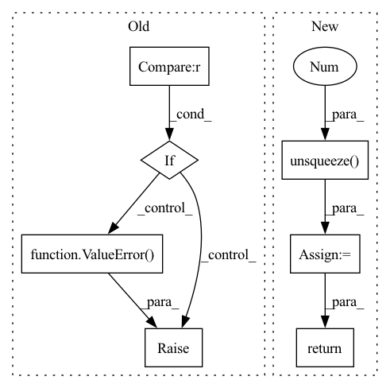

Pattern ID :10919
Before Change
return item_embedding
if self.sim_func == "cosine":
y = torch.cosine_similarity(user_embedding, item_embedding, dim=1)
elif self.sim_func == "dot" :
y = torch.mul(user_embedding, item_embedding).sum(dim=1)
else:
raise ValueError( "similarity function only support %s, but got %s" % (["cosine", "dot"], self.sim_func))
sample_weight = self.embedding(x, self.sample_weight_feature, squeeze_dim=True).squeeze(1)
y = y - torch.log(sample_weight) //Sampling Bias CorrectedAfter Change
// pred[i, j] means predicted score that user_i give to item_j
pred = torch.cosine_similarity(user_embedding.unsqueeze(1 ) , item_embedding, dim=2) // (batch_size, batch_size)
// get sample weight of items in this batch
sample_weight = self.embedding(x, self.sample_weight_feature, squeeze_dim=True).squeeze(1) // (batch_size)
scores = pred - torch.log(sample_weight) //Sampling Bias Corrected, using broadcast
if user_embedding.shape[0] * (self.n_neg + 1) != self.index0.shape[0]: // last batch
batch_size = user_embedding.shape[0]
index0 = self.index0[:batch_size * (self.n_neg + 1)]
index1 = self.index1[:batch_size * (self.n_neg + 1)]
index0[np.where(index0 >= batch_size)] -= batch_size
index1[np.where(index1 >= batch_size)] -= batch_size
scores = scores[index0, index1]
else:
scores = scores[self.index0, self.index1]
scores = scores / self.temperature
return scores.view(-1, self.n_neg + 1) //(batch_size, 1 + self.n_neg)
def user_tower(self, x):
if self.mode == "item":In pattern: SUPERPATTERN
Frequency: 3
Non-data size: 7
Instances Fragment ID: 37739085
Project Name: datawhalechina/torch-rechub
Commit Name: d0461152ddffad7a6bf7c7532b7b540094623e95
Time: 2022-06-07
Author: icewwl@163.com
File Name: torch_rechub/models/matching/youtube_sbc.py
M Class Name: YoutubeSBC
N Class Name: YoutubeSBC
M Method Name: forward(2)
N Method Name: forward(2)
M Parent Class: torch.nn.Module
N Parent Class: torch.nn.Module
M File Name: torch_rechub/models/matching/youtube_sbc.py
N File Name: torch_rechub/models/matching/youtube_sbc.py
M Start Line: 55
M End Line: 80
N Start Line: 60
N End Line: 87
Before Change
raise ValueError(
f"{self.id} `predict_variance` module output should have 2D output, got {len(pred.shape)}"
)
elif pred.shape[-1] not in (1, self.param_rank) :
raise ValueError(
f"{self.id} `predict_variance` module output should have `shape[-1]` of "
f"{self.param_rank}, got {pred.shape[-1]}"
)
if pred is not None:
diag_multi = torch.diag_embed(torch.exp(pred))
mini_cov = diag_multi @ mini_cov @ diag_multi
After Change
diag_multi = torch.diag_embed(torch.exp(pred))
mini_cov = diag_multi @ mini_cov @ diag_multi
mask = self.mask.unsqueeze(0).unsqueeze(0 )
return mask @ mini_cov @ mask.tranpose(-1, -2)
Fragment ID: 37739080
Project Name: strongio/torchcast
Commit Name: d98b47d1ac38c61653093efd887cc672f228917d
Time: 2021-09-01
Author: jacob.dink@strong.io
File Name: torchcast/covariance/base.py
M Class Name: Covariance
N Class Name: Covariance
M Method Name: forward(5)
N Method Name: forward(3)
M Parent Class: nn.Module
N Parent Class: nn.Module
M File Name: torchcast/covariance/base.py
N File Name: torchcast/covariance/base.py
M Start Line: 246
M End Line: 266
N Start Line: 266
N End Line: 290
Before Change
return img
def __call__(self, img: torch.Tensor) -> torch.Tensor:
if img.shape[1] != 3 :
raise ValueError( "HED jitter can only be applied to images with 3 channels (RGB).")
return self.adjust_hed(img)
After Change
if img.shape[0] > 1:
for i in range(img.shape[0]):
img_tile = img[i]
img[i] = self.adjust_hed(img_tile.unsqueeze(0 ) )
return img
else:
img = self.adjust_hed(img)
if len(original_shape) == 3: Fragment ID: 37739076
Project Name: microsoft/hi-ml
Commit Name: 5ce9e00fd52f9a4f80c11aa35d3b7152c1ce9fca
Time: 2023-02-22
Author: 61745616+harshita-s@users.noreply.github.com
File Name: hi-ml/src/health_ml/utils/data_augmentations.py
M Class Name: HEDJitter
N Class Name: HEDJitter
M Method Name: __call__(2)
N Method Name: __call__(2)
M Parent Class: object
N Parent Class: object
M File Name: hi-ml/src/health_ml/utils/data_augmentations.py
N File Name: hi-ml/src/health_ml/utils/data_augmentations.py
M Start Line: 75
M End Line: 78
N Start Line: 75
N End Line: 90